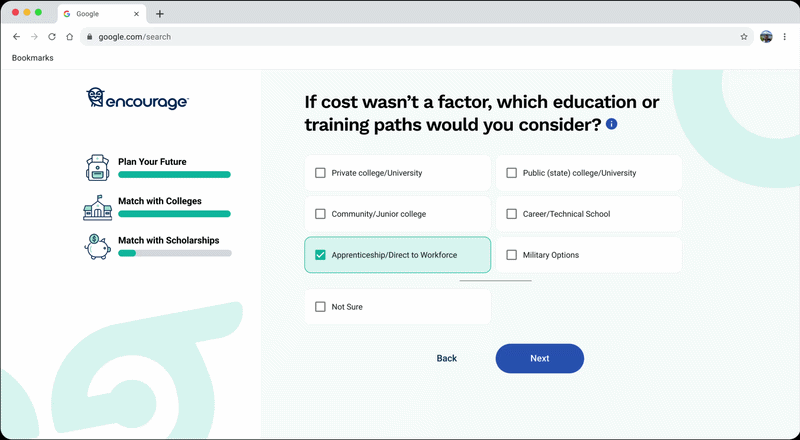

Product designer building engaging, student-facing K–12 learning tools, backed by learning science.
Hi, I'm Rahul. For five years I've designed the student side of Encourage, a college and career planning app. On my own time I built Chiron, an adaptive tutor.
Make a ten
Arrow keys add or remove a block.
Small moments that keep students moving
Micro-interactions from Encourage, for the 150,000+ students who use it to plan life after high school and the educators who guide them. Each one marks progress, so the next step feels close.


Encourage onboarding: twice the questions, chunked so students keep going
The onboarding survey had to double in length. I watched students take it in real classrooms, then rebuilt it around where they stalled: questions chunked by topic, small animations that mark progress. In Encoura's first in-app A/B test, completion held near 84% with twice the questions.
Shipping Fall 2026
Encourage for Educators: designing for the counselor's workflow
The counselor side of Encourage, built around how guidance staff already organize their day, so they can track hundreds of students and see who's stuck and why.
Shipped
Chiron: an adaptive tutor that teaches to mastery
My own work on adaptive learning. Chiron asks questions until it finds what you can't yet explain, builds a lesson around that gap, and adapts the next one to your answers. You move on once you've shown you've got it.
View on GitHub (opens in new tab)Accessibility and React Native
Accessible from the first sketch
- Designed Encourage to WCAG 2.1 AA, with keyboard and screen-reader paths planned up front.
- Working toward the IAAP CPACC certification.
- Minored in American Sign Language at RIT.
- This page meets AA contrast on every color pair and respects reduced motion settings.
Moving Encourage to React Native
- Led the migration of Encourage, used by 150,000+ students, to cross-platform React Native.
- Reworked layouts to hold up on the school-issued devices students actually use.
DreamBox's January 2025 K–5 release brought screen reader support and keyboard navigation inside the math manipulatives, where they're hardest to get right. That's the work I want to be doing.
Critique, test, and ship inside the sprint
-
Critique
I bring work to critique early and rough, along with the questions it raises. I'm good at uncovering the ones nobody has asked yet, and people tell me the work feels considered because of it.
-
Research, then validation
Watch it in use, change it, then test the change. Onboarding went from classroom visits to a redesign to Encoura's first in-app A/B test.
-
Inside the sprint
I design alongside engineering and own the Encourage Design System. Every screen gets a UI review in Storybook and Chromatic before it ships.